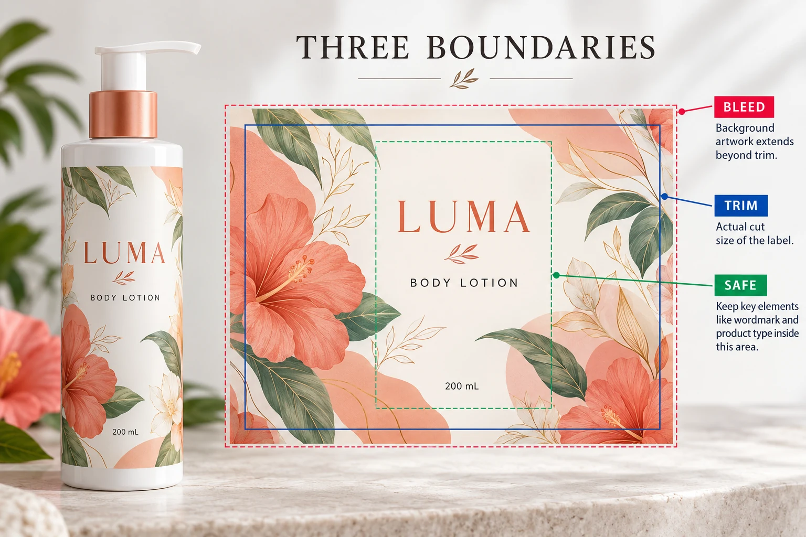

Lock the finished label size first
Keep the container-fit decision identifiable: finished width and height, shape, corner treatment where relevant, and the approved dieline reference. Use units consistently and distinguish the cut boundary from an artboard or preview image.
A larger PDF page does not necessarily mean a larger finished label. It may include background extension or production information around the cut. Conversely, a file with familiar page dimensions does not prove that the intended die-cut path is correct.
The bottle label size guide covers usable panels, paper fit and preliminary wrap sizing. Complete that physical sizing task before treating an artwork rectangle as the manufacturing instruction. The wrap calculator does not supply a production dieline or add the necessary artwork allowances.
Understand what background bleed changes
Adobe's Illustrator guidance on printer's marks and bleeds explains that bleed extends artwork beyond the trim boundary while the trim marks still define the same finished size. It also directs users to the print shop for the amount appropriate to their job.
Apply that distinction to the label brief. If a colored background is intended to reach the edge, ask how far it should extend beyond the approved cut path and how the printer wants that supplied. Do not borrow a generic sheet-printing number and present it as the requirement for every cosmetic label construction.
Increasing a bleed setting is not a substitute for extending the actual background artwork. Have the designer check the resulting file, not merely confirm that a number was entered in an export dialog.
Keep important content away from the wrong boundary
The trim path identifies the intended finished edge. The safe area is a project-specific working boundary for content that should remain protected from that edge. Agree the required clearance with the printer rather than assuming it equals the bleed.
Review the brand name, product name, approved copy and other essential elements against that agreed inner boundary. Also consider where the applied label will bend or turn away from the front view. A file can respect its cut path while still placing a product name awkwardly on the bottle.
This article does not prescribe legal type size, barcode clearances or a universal cutting tolerance. Those requirements need their own relevant specifications and responsible review. For barcode-specific approval, use the finished-bottle barcode checklist.
Agree how technical lines are supplied
Ask whether the printer needs its own dieline file, a named layer, a separately identified path or another agreed arrangement. Clarify which technical elements are instructions and which are intended to print.
Avoid guessing that a particular line color always means “do not print.” A familiar red outline may be a design stroke in one file and a technical path in another. The production handoff should state its purpose clearly enough that the receiving prepress team does not need to infer it.
Keep the approved reference and revision with the artwork. If a designer changes the shape or moves a technical path, ask whether that is a deliberate manufacturing change. It should not arrive disguised as a harmless layout cleanup.

Review the exported file with a boundary checklist
The following table is a practical artwork handoff record, not a universal prepress standard.
| Check | What the reviewer should be able to identify |
|---|---|
| Dieline identity | Current supplier reference, revision and agreed finished dimensions |
| Cut boundary | The intended finished shape, separate from the PDF page or artboard |
| Background extension | Artwork actually extending beyond the cut where required |
| Protected content | Essential elements inside the agreed clearance and readable at actual size |
| Technical elements | Layer or path purpose, naming and whether it is intended to print |
| Exported result | The exact PDF or production file being reviewed, with required information retained |
| Release | Approver, outstanding difference and the corrected file ID if changes were made |
Follow the boundaries in that order. Establish which file and dieline are current, confirm the finished cut, check the background extension, then review the protected content and technical instructions. Reopen the exact exported file before recording approval.
If the printer cannot identify the cut path or the designer is using an older dieline, stop that release and resolve the reference. A screenshot with a tidy border is not enough to settle which manufacturing file will be used.
Two artwork routes can need different reviews
A small front label with a plain background may have a straightforward boundary review once its shape and printer requirements are confirmed. It does not need decorative artwork extended into an area where none is intended.
A full-color wrap with a pattern meeting the edges needs closer attention to background extension, critical content and the applied seam position. That does not make the wrap a bad choice. It means its artwork should be evaluated against the actual shape and visual objective.
For either route, keep print preparation distinct from physical fit and material performance. An approved PDF can settle the documented layout; it cannot establish adhesion or how the label looks after application. Our digital proofing guide explains the broader proof conversation.
Send a boundary question with a reference file
For a cosmetic label quotation, send the container details, finished label size, quantity per design and current artwork. Include the supplier dieline if available and identify whether you need clarification about the cut shape, bleed, protected content or export arrangement.
Use the inquiry form to prepare your message, then send the artwork and dieline through email or WhatsApp. The form does not upload attachments. Before release, make sure the file acknowledged by the printer is the one whose boundaries your team reviewed.